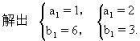
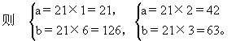
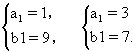
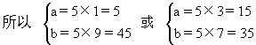
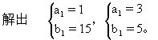
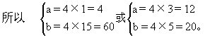

第四讲 最大公约数和最小公倍数
本讲重点解决与最大公约数和最小公倍数有关的另一类问题——有关两个自然数.它们的最大公约数、最小公倍数之间的相互关系的问题。
定理1 两个自然数分别除以它们的最大公约数，所得的商互质.即如果（a，b）=d，那么（a÷d，b÷d）＝1。
证明：设a÷d=a1，b÷d=b1，那么a＝a1d，b=b1d。
假设（a1，b1）≠1，可设（a1，b1）＝m（m＞1），于是有a1=a2m，b1＝b2m.（a2，b2是整数）
所以a=a1d＝a2md，b＝b1d＝b2md。
那么md是a、b的公约数。
又∵m＞1，∵md＞d。
这就与d是a、b的最大公约数相矛盾.因此，（a1，b1）≠1的假设是不正确的.所以只能是（a1，b1）=1，也就是（a÷d，b÷d）＝1。
定理2 两个数的最小公倍数与最大公约数的乘积等于这两个数的乘积.（证明略）
定理3 两个数的公约数一定是这两个数的最大公约数的约数.（证明略）
下面我们就应用这些知识来解决一些具体的问题。
例1 甲数是36，甲、乙两数的最大公约数是4，最小公倍数是288，求乙数.
解法1：由甲数×乙数=甲、乙两数的最大公约数×两数的最小公倍数，可得
36×乙数=4×288，
乙数=4×288÷36，
解出 乙数=32。
答：乙数是32。
解法2：因为甲、乙两数的最大公约数为4，则甲数=4×9，设乙数=4×b1，且（b1，9）=1。
因为甲、乙两数的最小公倍数是288，
则 288＝4×9×b1，
b1＝288÷36，
解出 b1＝8。
所以，乙数=4×8=32。
答：乙数是32。
例2 已知两数的最大公约数是21，最小公倍数是126，求这两个数的和是多少？
解：要求这两个数的和，我们可先求出这两个数各是多少.设这两个数为a、b，a＜b。
因为这两个数的最大公约数是21，故设a=21a1，b＝21b1，且（a1，b1）＝1。
因为这两个数的最小公倍数是126，
所以 126=21×a1×b1，
于是 a1×b1=6，


因此，这两个数的和为21＋126=147，或42＋63=105。
答：这两个数的和为147或105。
例3 已知两个自然数的和是50，它们的最大公约数是5，求这两个自然数。
解：设这两个自然数分别为a与b，a＜b.因为这两个自然数的最大公约数是5，故设a=5a1，b=5b1，且（a1，b1）=1，a1＜b1。
因为 a＋b=50， 所以有5a1+5b1=50，
a1+b1=10。
满足（a1，b1）=1，a1＜b1的解有：


答：这两个数为5与45或15与35。
例4 已知两个自然数的积为240，最小公倍数为60，求这两个数。
解：设这两个数为a与b，a＜b，且设（a，b）＝d，a＝da1，b＝db1，其中（a1，b1）＝1。
因为两个自然数的积=两数的最大公约数×两数的最小公倍数，
所以 240=d×60，
解出 d＝4，
所以 a=4a1，b=4b1.
因为a与b的最小公倍数为60，
所以 4×a1×b1＝60，
于是有 a1×b1＝15。


答：这两个数为4与60或12与20。
例5 已知两个自然数的和为54，它们的最小公倍数与最大公约数的差为114，求这两个自然数。
解：设这两个自然数分别为a与b，a＜b，（a，b）＝d，a＝da1，b＝db1，其中（a1，b1）＝1。
因为a+b＝54，所以da1+db1=54。
于是有d×（a1＋b1）＝54，因此，d是54的约数。
又因为这两个数的最小公倍数与最大公约数的差为114，
所以da1b1-d=114，
于是有d×（a1b1-1）=114，
因此，d是114的约数。
故d为54与114的公约数。
由于（54，114）＝6，6的约数有：1、2、3、6，根据定理3，d可能取1、2、3、6这四个值。
如果d＝1，由d×（a1+b1）＝54，有a1＋b1=54；又由d×（a1b1-1）＝114，有a1b1=115。
115=1×115=5×23，但是1＋115=116≠54，5＋23=28≠54，所以d≠1.
如果d＝2，由d×（a1＋b1）＝54，有a1+b1=27；又由d×（a1b1-1）=114，有a1b1=58。
58＝1×58＝2×29，但是1＋58＝59≠27，2+29＝31≠27，所以d≠2。
如果d=3，由d×（a1＋b1）=54，有a1+b1＝18；又由d×（a1b1-1）=114，有a1b1=39。
39＝1×39＝3×13，但是1＋39＝40≠18，3＋13＝16≠18，所以d≠3。
如果d=6，由d×（a1＋b1）=54，有a1＋b1=9；又由d×（a1b1-1）=114，有a1b1=20。
20表示成两个互质数的乘积有两种形式：20=1×20＝4×5，虽然1＋20=21≠9，但是有4＋5＝9，所以取d＝6是合适的，并有a1=4，b1＝5。
a＝6×4＝24，b＝6×5＝30。
答：这两个数为24和30。
例6 已知两个自然数的差为4，它们的最大公约数与最小公倍数的积为252，求这两个自然数。
解：设这两个自然数分别为a与b，且a＞b，a＝da1，b=db1，（a1，b1）＝1。
因为a-b=4，所以da1-db1=4，于是有d×（a1-b1）=4，因此d为4的约数。
因为这两个自然数的最大公约数与最小公倍数的积为252，所以d×da1b1＝252，于是有d2×a1b1=（2×3）2×7，因此d为2×3的约数。
故d为4与2×3的公约数。
由于（4，2×3）＝2，2的约数有1和2两个，所以d可能取1、2这两个值。
如果d=1，由d×（a1-b1）=4，有a1-b1=4；又由d2×a1b1=252，有a1b1=252。
252表示成两个互质数的乘积有4种形式：252=1×252=4×63=7×36＝9×28，但是252-1＝251≠4，63-4＝59≠4，36-7=29≠4，28-9＝19≠4，所以d≠1。
如果d=2，由d×（a1-b1）=4，有a1-b1=2；又由d2×a1b1＝252，有a1b1=63。
63表示为两个互质数的乘积有两种形式：63＝1×63=7×9，但63-1＝62≠2，而9-7＝2，且（9，7）=1，所以d=2，并且a1＝9，b1＝7。
因此a=2×9＝18，b＝2×7＝14。
答：这两个数为18和14。
在例2～例5的解答中之所以可以在假设中排除a=b这种情形（在各例中都只假设了a＜b），分别是由于：例2和例5，若a＝b，则（a，b）＝[a，b]＝a，与条件（a，b）≠[a，b]矛盾；例3，若a=b，则a＝b=（a，b）=5，因此a＋b＝10≠50，与条件矛盾；例4，a×b=240不是平方数。
从例题的解答中可以看出，在处理涉及两数的最大公约数或者最小公倍数的很多问题中，经常用到的基本关系是：若两数为a、b，那么a=a1d，b＝b1d，其中d=（a，b），（a1，b1）＝1，因此[a，b]＝da1b1，有时为了确定起见，可设a≤b.对于很多情形，可以排除a=b的情形（如上述所示），而只假设a＜b.